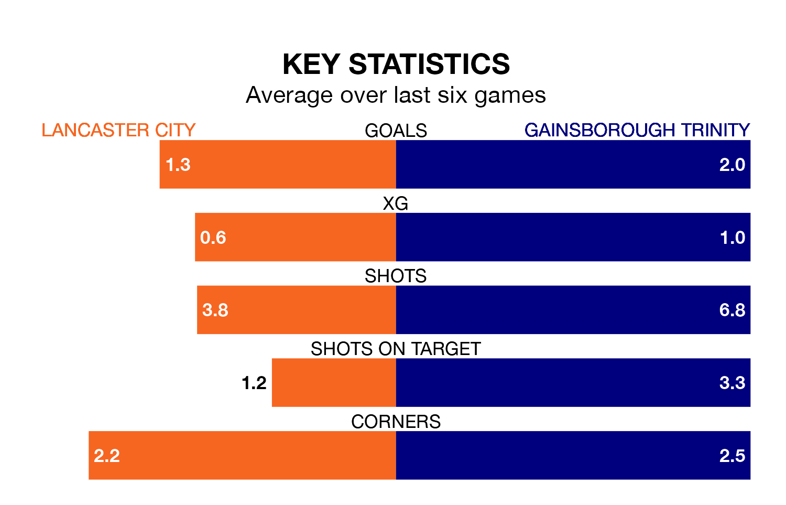

Gainsborough Trinity visit Lancaster City at Giant Axe on Saturday on the back of three consecutive wins in the Northern Premier League.
Gainsborough Trinity have picked up 15 points from their last six games, and they face a Lancaster side who have also won their last two matches, and collected nine points from the last possible 18.
In the last 10 years, Lancaster and Gainsborough Trinity have played each other on 11 occasions. Lancaster won four of them and Gainsborough Trinity seven.
On average, Lancaster scored 1.3 goals and the Blues 1.6 in those matches.
Their last meeting was on November 4, when Gainsborough Trinity won 1-0 at home.
With 52 goals in 36 games so far this season, Lancaster are scoring at below the league average rate with 1.4 goals per game. But they are conceding fewer than average too, letting in 51 goals at a rate of 1.4 per game.
Gainsborough Trinity are also below average scorers, with 1.5 goals per game, compared to a league average of 1.6. They have conceded 1.6 goals per game.
City are ninth in the table after 36 games, of which they have won 16 and drawn eight, earning 56 points.
The Blues are three places behind the hosts in 12th, with 16 wins and five draws putting them on 53 points.
Lancaster's last match was on Monday, a 3-2 win against Bamber Bridge.
Gainsborough Trinity beat Stafford Rangers 2-1 last time out, also on Monday.
Updated: 16:41 (UTC), 04/04/24